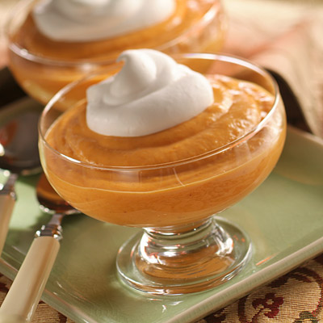

PUDDING

| Quantity | Ingredients |
|---|---|
| 1 cup | Granulated sugar |
| 3/4 cup | Corn starch |
| 3/4 cup | Dry milk powder |
| 1 teaspoon | Kosher salt |
| 2 | Whole vanilla beans |
Directions
- In a medium bowl, whisk together the sugar, cornstarch, milk powder, and salt; set aside.
- Split open the vanilla beans and use the back of a knife to scrape out the seeds. Add the seeds to the sugar mixture, and again whisk well to evenly combine, using a fork or the back of the spoon to break up any chunks of vanilla bean seeds. Cut the empty vanilla bean pods into two or three pieces each.
- Place the vanilla bean pieces into an airtight container or jar, and add the sugar mixture. Seal it, and then give it a few good shakes to distribute the vanilla bean pieces evenly. Store in a cool, dry place.
- To make pudding: Combine 2 cups of milk with ½ cup of the instant pudding mix in a medium saucepan over high heat, whisking constantly. Bring to a boil, and then immediately reduce the heat to a simmer and continue whisking until the mixture thickens and coats the back of a spoon (about 3 to 5 minutes). Let sit for at least 5 minutes before serving. Store leftovers in an airtight container in the refrigerator.